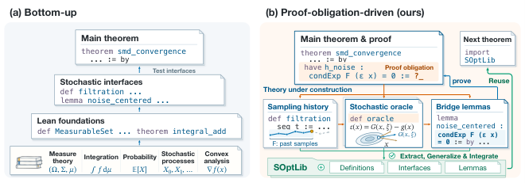
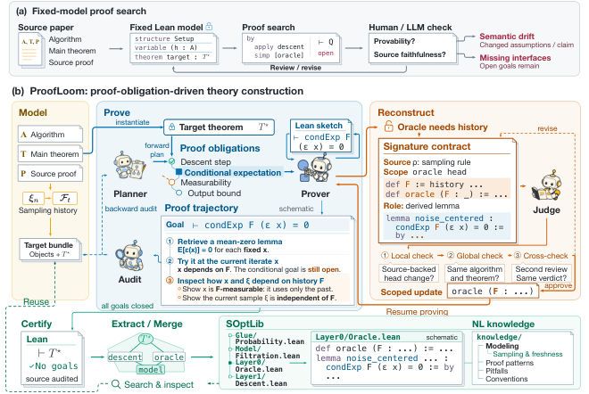

An LLM-agent system autonomously constructs Lean models, domain theory, and machine-checked convergence proofs for stochastic optimization algorithms, building on Mathlib.
Abstract
Formalizing research-level stochastic optimization in Lean requires both an algorithm model and domain theory connecting foundational libraries to convergence proofs. Revising a model to restore provability can change the mathematical claim. We introduce ProofLoom, a fully automated LLM-agent system for Proof-Obligation-Driven Theory Construction. Given a published algorithm, target theorem, and source proof, ProofLoom autonomously constructs the Lean model and supporting theory. Open proof obligations drive the development of definitions, interfaces, lemmas, and proof plans. Signature contracts record evidence and obligations for model revisions; an independent Judge rejects unsupported assumptions and weakened conclusions. Planner expands the published argument into intermediate claims, and Audit checks whether the Lean proof follows it. Across tasks, SOptLib accumulates verified mathematics and construction experience: reusable results are extracted, generalized, and verified, while modeling decisions and failed proof routes are recorded. Later tasks retrieve these results and records and contribute new developments, forming a cycle of construction, accumulation, and reuse. On fifteen textbook and research-paper tasks, ProofLoom obtains mean human ratings of 6.3/7 and 6.4/7, compared with 4.9/7 and 5.0/7 for the strongest of six baselines. Across 33 developments, it produces 490,693 lines of algorithm-local Lean code with no sorry. The formalizations also expose 28 incorrect formulas, proof gaps, and algorithm-analysis mismatches in published sources across 22 developments, each with checked evidence.
Problem
Formalizing research-level stochastic optimization convergence proofs in Lean requires both an algorithm model and domain theory bridging foundational libraries to convergence arguments. Mathlib lacks the interfaces and bridge lemmas connecting probability and convex analysis to these algorithms, and revising the model to restore provability can silently change the mathematical claim.
Approach
ProofLoom is a fully automated LLM-agent system for Proof-Obligation-Driven Theory Construction. Given a published algorithm, target theorem, and source proof, it builds the Lean model and supporting theory top-down, letting open proof obligations drive development of definitions, interfaces, lemmas, and proof plans. Signature contracts record evidence and obligations for model revisions, and an independent Judge rejects unsupported assumptions or weakened conclusions. A Planner–Audit mechanism expands the source argument into intermediate claims and checks whether the Lean proof follows it, while SOptLib accumulates verified Lean results and construction records for reuse.

Figure 1 : Two construction orders. Bottom-up methods build theory first; ProofLoom constructs definitions, interfaces, and lemmas as required by the target proof.

Figure 2 : ProofLoom system overview. Model defines the algorithm and theorem; Construct builds proofs and reviews revisions; Learn certifies developments and updates SOptLib.
Results
On fifteen textbook and research-paper tasks, ProofLoom obtains mean human ratings of 6.3/7 and 6.4/7 versus 4.9/7 and 5.0/7 for the strongest of six baselines. Across 33 developments it produces 490,693 lines of algorithm-local Lean code with no sorry, and exposes 28 incorrect formulas, proof gaps, and algorithm-analysis mismatches across 22 developments.
System
Human (1–7)
G-Eval GPT
FidelityEval GPT
Raw Codex
2.8
36.5
31.4
Trellis
4.5
63.1
67.0
Archon
4.9
61.4
72.8
ProofLoom
6.3
92.0
87.8
Task-averaged human and model-based scores (FOML group)